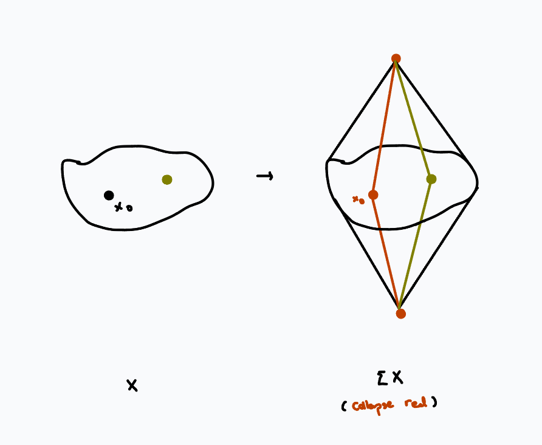
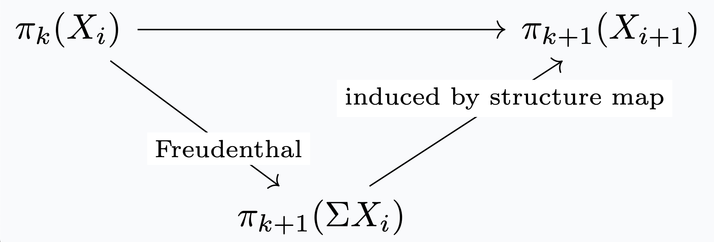
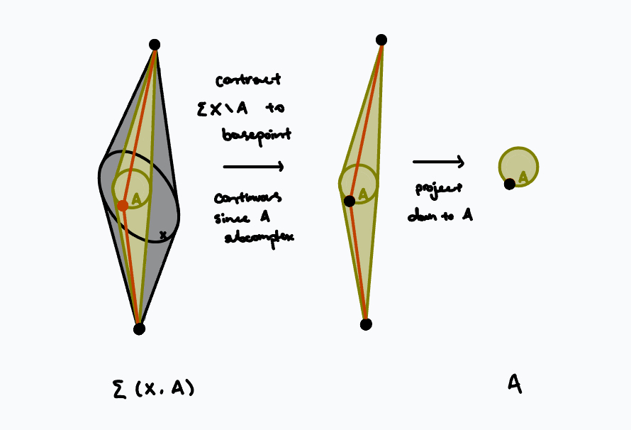

date: 11.19.2024
slogan: spectra represent cohomology theories.
Much of this talk is based on Brown's original 1961 paper, Cohomology Theories. I first motivate spectra as a fundamental object of study. Then, I demonstrate how to get a cohomology theory given a spectrum. Finally, and this is where we spend most of our efforts, I construct a spectrum given a cohomology theory.
This talk is aimed at those familiar with algebraic topology but not homotopy theory. I assume as little as possible and go at a relatively leisurely pace.
Take \(X\) to be a pointed path-connected space with the structure of a CW-complex.
Vague question. What are the dimension-independent properties of \(X\)?
To make sense of this question, we need a generalization of \(X\) that provides some space in "each dimension" which preserve the relevant structure of \(X\). In particular, we need to decide what "relavant structure" means.
A candidate for the "relavant structure" is homology, which is preserved under taking suspensions: we have isomorphisms $$\tilde{H}_{k+1}(\Sigma X) \xrightarrow{\sim} \tilde{H}_{k}(X)$$ in reduced homology, coming from Mayer-Vietoris by viewing suspension as gluing together two cones (recall cones are contractible.) Taking the \(k\)-suspension of \(X\) simply shifts the indices of the homology groups by \(k\), so homology is essentially invariant under suspension.
Definition. A suspension spectrum is a sequence of spaces \(\{X_i\}_{i \in \mathbb{Z}}\) with structure maps $$\Sigma X_i \xrightarrow{\sim} X_{i+1}$$ which are isomorphisms.
How much structure does this invariance of homology groups force? The natural next thing to wonder is whether homotopy groups are also invariant under suspension. Clearly this isn't true on the nose: \(S^k = \Sigma^{k-1}S^1\), and homotopy groups of spheres are not so simple. But homotopy groups are invariant under certain connectedness conditions:
Freudenthal suspension theorem. Suppose \(X\) is \(n\)-connected. The map $$X \rightarrow \Omega \Sigma X$$  loops of suspension of X"> induces the map $$f_k: \pi_k(X) \rightarrow \pi_k(\Omega \Sigma X) \simeq \pi_{k+1}(\Sigma X)$$ where the last isomorphism is given by the suspension-loop adjunction. Then \(f_k\) is an isomorphism for \(k \leq 2n\) and an epimorphism for \(k = 2n+1\).
This theorem is a direct consequence of homotopy excision.
Also, by the long exact sequence in relative homotopy, we have isomorphisms $$\pi_k((CX)_{+},X) \xrightarrow{\sim} \pi_{k-1}(X)$$ and since cones are contractible, \(\pi_k(\Sigma X,(CX)_{-}) = \pi_k(\Sigma X).\) Substituting back into \(g_k\) we have the desired isomorphisms/surjection.
(You can work through the homotopy excision and the suspension-loop adjunction explicitly to see \(g_k\) is the same map as \(f_k\).)
Unfortunately, if \(X\) doesn't start out very well-connected, this theorem doesn't say much. But recall that taking suspensions raises the connectivity: the first nonzero homotopy group is also the first nonzero homology group, and taking suspension shifts the indices of the homology groups by one, so if \(X\) is \(n\)-connected, then \(\Sigma X\) must be \((n+1)\)-connected, and \(\Sigma^k X\) is \((n+k)\)-connected. As we keep on taking higher and higher suspensions, more and more homotopy groups stay the same, and we can make the following definition.
Definition. The \(i\)-th stable homotopy group of \(X\) is $$\pi_i^s(X) = \lim_n \pi_{n+i}(\Sigma^i X).$$
(Note: this is a colimit in the category of abelian groups.)
What if, instead, we took the "relevant structure" to mean directly that the homotopy groups are preserved? In other words, we wonder whether there is a sequence of spaces \(\{X_i\}_{i\in \mathbb{Z}}\) such that \(X_0=X\) and $$ \pi_k(X_i) = \pi_{k+1}(X_{i+1}).$$ We may rewrite this condition on homotopy groups by using the suspension-loop adjunction, as $$\pi_k(X_i)=[S^k,X_i] = [S^{k+1}, X_{i+1}] \simeq [S^k, \Omega X_{i+1}] = \pi_k(\Omega X_{i+1}).$$ At this point, we may be tempted to try to find \(X_{n+1}\) iteratively so that \(X_n = \Omega X_{n+1}\). Unfortunately, not all spaces can be de-looped; see May's treatise on operads, The Geometry of Iterated Loop Spaces. Instead we settle for just requiring weak equivalences:
Definition. An \(\Omega\)-spectrum is a sequence of spaces \(\{X_i\}_{i \in \mathbb{Z}}\) with weak equivalences $$X_i \rightarrow \Omega X_{i+1}.$$
It is a priori unclear that given \(X\), there is a \(\Omega\)-spectrum where \(X_0=X\). But actually there is, by the construction in section IV.
Example. Our favorite example of spaces with simple homotopy groups are Eilenberg-Maclane spaces \(K(G,n)\), whose only nontrivial homotopy group is \(\pi_n(K(G,n)) = G\). Then fixing \(G\), \(K(G,-)\) gives an \(\Omega\)-spectrum.
Motivated by this, we make the following preliminary definitions.
Definition. A (CW-)spectrum consists of a sequence \(\{X_i\}_{i \in \mathbb{Z}}\) of pointed CW-complexes with structure maps \(\Sigma X_i \rightarrow X_{i+1}\).
Definition. The homotopy groups of a spectrum \(X=\{X_i\}_{i \in \mathbb{Z}}\) is the colimit $$\pi_n(X) = \lim_n \pi_{n+i}(X_i)$$ in the category of abelian groups, where the maps \(\pi_k(X_i) \rightarrow \pi_{k+1}(X_{i+1})\) are defined by factoring through: 
We will revisit the general notion of spectra in section V. For now, it suffices to focus on \(\Omega\)-spectra.
Let \(\mathcal{C}\) be the category of CW-pairs, and \(\mathbf{Ab}\) the category of abelian groups. Recall the Eilenberg-Steenrod axioms:
Definition. A generalized cohomology theory consists of functors \(H^q:\mathcal{C}^{op} \rightarrow \mathbf{Ab}\) for \(q \in \mathbb{Z}\) with a collection of natural isomorphisms \(\partial: H^q(A) \rightarrow H^{q+1}(X,A)\) satisfying
Examples. Beyond the ordinary cohomology theories, \(K\)-theory and cobordism are also cohomology theories.
The motivating example for the main theorem is the fact that for ordinary cohomology, \(H^q(X, G) \simeq [X, K(G,n)]\). If you're unfamiliar with this fact, I quite like the first chapter of Cohomology Operations and Applications in Homotopy Theory by Mosher and Tangora.
Brown Representability Theorem. If \(\{H^q, \partial\}\) is a cohomology theory, there is an \(\Omega\)-spectrum \(Y=\{Y_q\}\) such that there is a natural isomorphism $$T^q:[-,Y_q] \xrightarrow{\sim} H^q$$ such that \(\partial T^q = T^{q+1} \partial.\)
Given an \(\Omega\)-spectrum \(Y = \{Y_q\}\), we show \([-,Y_q]\) specifies a cohomology theory. The boundary \(\partial\) is defined as follows: take $$f: \Sigma (X,A) \rightarrow (A,x_0)$$  which induces a map $$[A,Y_q] \xrightarrow{f_*} [\Sigma (X,A), Y_q]$$ which, by the suspension-loop adjunction, gives $$\partial: [A,Y_q] \rightarrow [(X,A), Y_{q+1}].$$
Now we show \(\{[-,Y_q], \partial\}\) is a cohomology theory by checking the axioms:
At this point, we want to say the sentence "cohomology theories are representable functors."